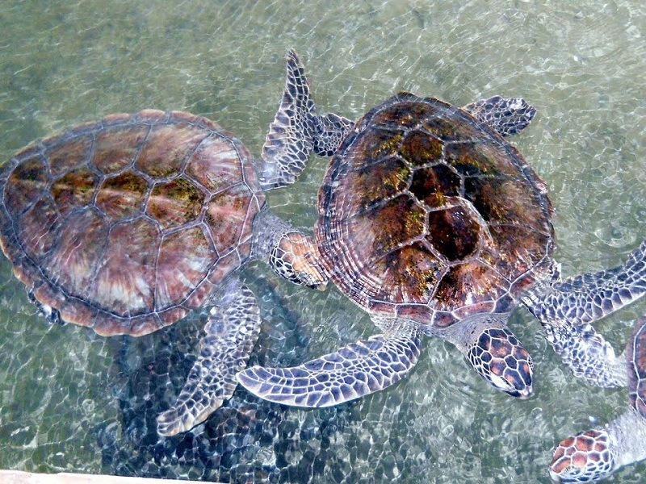
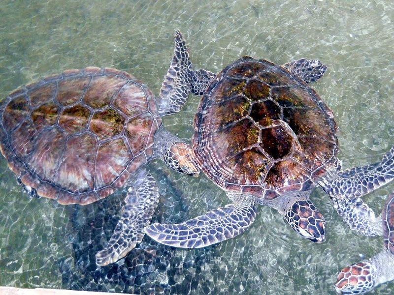
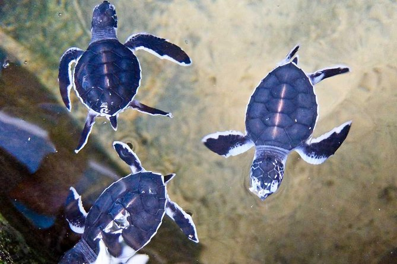
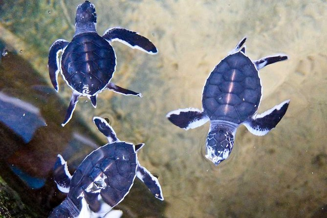

The Kosgoda Sea Turtle Conservation Project is located along the coast of the Indian Ocean at Kosgoda which is about 9 km from Bentota Railway Station. The project was started by Dudley Perera in the year 1988. The main aim of the project is to monitor local sea turtle activity and conserve the local nesting sites. They aim to make the public more aware of how endangered these beautiful creatures are and just how important it is to help protect them before it is too late
- Turtle Conservation: The hatchery takes care of turtle eggs and hatchlings until they are strong enough to be released into the sea. The center also rescues and rehabilitates injured turtles. Visitors can learn about the various species of turtles found in Sri Lanka and the threats they face.
- Release of baby turtles: Visitors can participate in the release of baby turtles into the sea. This is a unique and memorable experience that allows you to see the hatchlings make their first journey into the ocean.
- Educational experience: The hatchery offers an educational experience where visitors can learn about turtle conservation and the role they can play in protecting the marine environment. The center also conducts workshops and programs for school children and other interested groups.
- Tour of the facility: Visitors can take a tour of the hatchery to see how turtles are cared for, the incubation process of turtle eggs, and the work that goes into rehabilitating injured turtles. The guides are knowledgeable and happy to answer any questions.
- Adopt-a-turtle program: The hatchery has an "adopt-a-turtle" program where visitors can contribute to the conservation effort by adopting a baby turtle. The funds go towards the care and rehabilitation of injured turtles and the protection of their natural habitat.
- Snorkeling and diving: Hikkaduwa is a popular spot for snorkeling and diving, and visitors can book tours that take them to see the turtles in their natural habitat.
 

 
